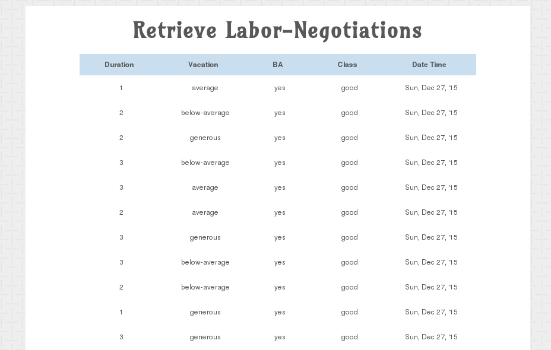
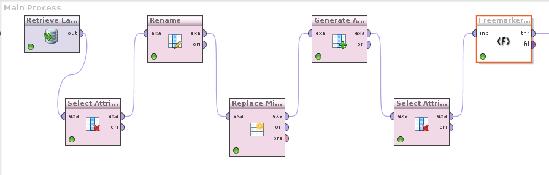
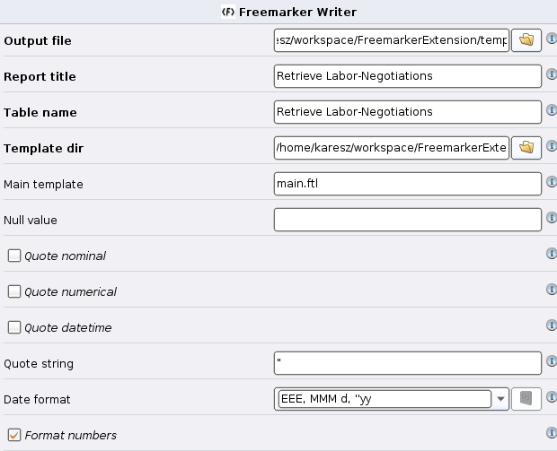

How to create attractive appearance html output from the result of a RapidMiner process using the Freemarker operator?

If you've never used the Freemarker template engine, please find more information on the product site:
http://freemarker.incubator.apache.org/
Data mappings between the RapidMiner ExampleSet and the Freemarker operators Rows and Columns.
| Data mappings | |
|---|---|
| Rapidminer data structure | Freemarker operator data structure |
| ExampleSet | rows |
| Example | row |
| Example values | row.cells |
| Attributes | columns |
| Attribute | column |
| Attribute name | column.name |
| Attribute type | column.type and cell.type |
| Attribute value | cell.value |
| Column type mappings: | |
|---|---|
| Rapidminer data type | Freemarker operator data type |
| nominal | TEXT |
| numerical | REAL |
| integer | INTEGER |
| real | REAL |
| text | TEXT |
| binominal | TEXT |
| polynominal | TEXT |
| file_path | TEXT |
| date_time | DATE |
| date | DATE |
| time | DATE |
The basic html template (without css and javascript) file main.ftl is the following:
<!DOCTYPE html>
<html>
<head>
<title>${title}</title>
</head>
<body>
<div id="wrapper">
<H1>${title}</H1>
<table id="keywords" cellspacing="0" cellpadding="0">
<thead>
<tr>
<#list columns as col>
<th class="header"><span>${col.name}</span></th>
</#list>
</tr>
</thead>
<tbody>
<#list rows as row>
<tr>
<#list row.cells as cell>
<td>${cell}</td>
</#list>
</tr>
</#list>
</tbody>
</table>
</div>
</body>
</html>
The Rapidminer process to create an example html output with this template.
You can download the following example process here.


Add styling and javascript to the template.
You can download the example main.ftl with styling and javascript table sorting here.
Enjoy it!
Authors and Contributors
In 2015, Karoly Fuzeseri (@fuzeseri), started to work on this projekt.
Support or Contact
Please contact me on the github